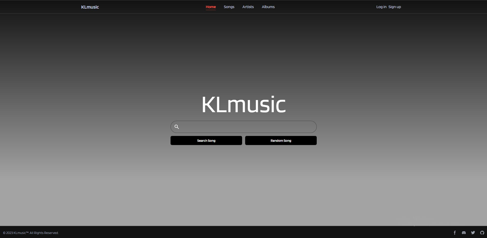
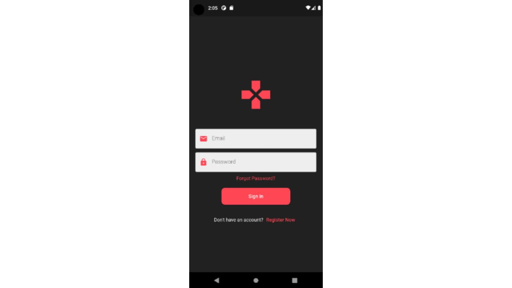
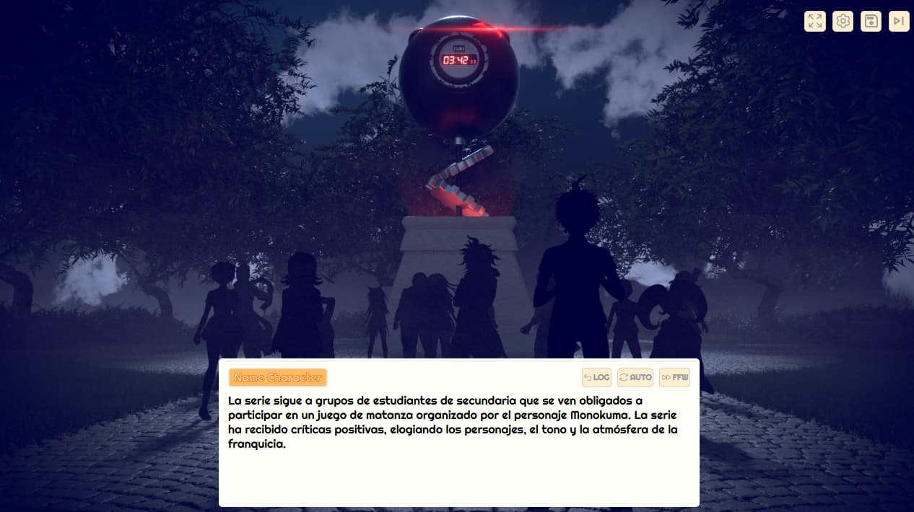

KLmusic es una página web, en la que un usuario podrá buscar Karaokes que han sido creados por otros usuarios o los suyos propios. Los usuarios tendrán la posibilidad de personalizar el karaoke.
Jose Andres Miranda Fernandez
Desarrollador Fullstack
Busco crear soluciones eficientes y escalables tanto en el frontend como en el backend. A lo largo de mi trayectoria, he trabajado en diversos proyectos que van desde aplicaciones web hasta aplicaciones móviles, siempre buscando mejorar la experiencia del usuario y la optimización del rendimiento. Me mantengo actualizado con las últimas tecnologías y metodologías, lo que me permite adaptarme rápidamente a nuevos retos y aportar valor a cada proyecto.
Experiencia
Desarrollador Frontend
Marzo-2023 / Junio-2023 TalentToolsDesarrollo de una aplicación web. Una Aplicacion para la gestión de talento. Implemento la lógica y la interfaz de usuario con Angular y Material-UI.
Maquetacion de página web con frameworks, desarrollo de API con ExpressJS.
Desarrollador FullStack
Febrero-2024 / Junio-2024 SSHTeamDesarrollo de multiple aplicaciones, con las siguientes tecnologias Flask, Odoo , React.
Proyectos
KLMUSIC
- React
- MySQL
- Laravel
eSearhPlayers
- Flutter
- Node JS
- Firebase
Es una red social para jugadores competitivos en el cual se podra buscar jugadores , entrar en clannes etc...
VisualMaker
- Angular
- Expres JS
- SQLite
Es una aplicacion que permite crear novelas visuales personalizadas, con personajes memorables, escenarios envolventes y tramas que atraparán a los lectores...
KLMUSIC
- React
- MySQL
- Laravel
KLmusic es una página web, en la que un usuario podrá buscar Karaokes que han sido creados por otros usuarios o los suyos propios. Los usuarios tendrán la posibilidad de personalizar el karaoke.
eSearhPlayers
- Flutter
- Node JS
- Firebase
Es una red social para jugadores competitivos en el cual se podra buscar jugadores , entrar en clannes etc...
VisualMaker
- Angular
- Expres JS
- SQLite
Es una aplicacion que permite crear novelas visuales personalizadas, con personajes memorables, escenarios envolventes y tramas que atraparán a los lectores...